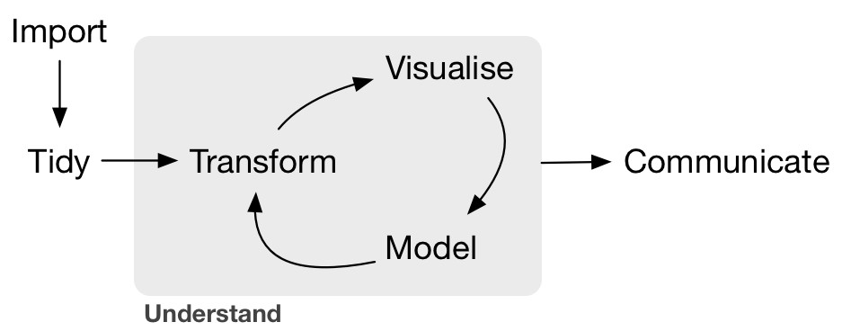
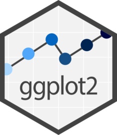
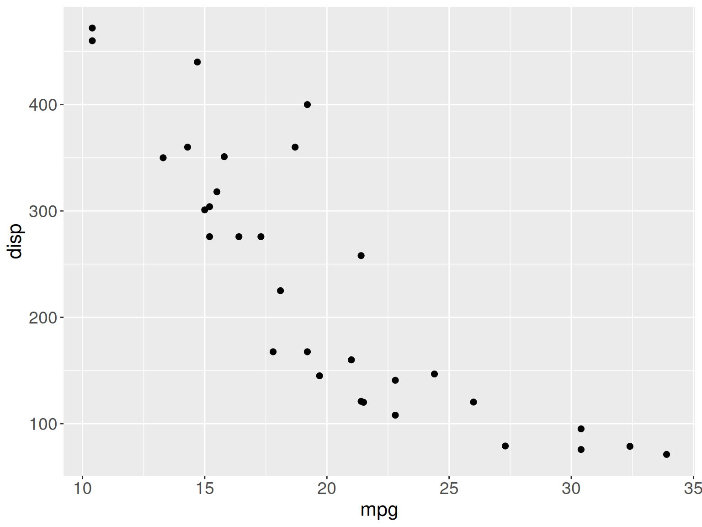
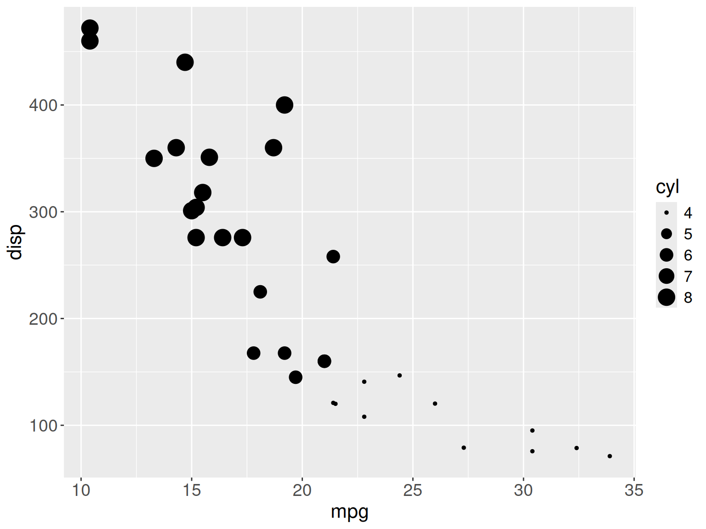
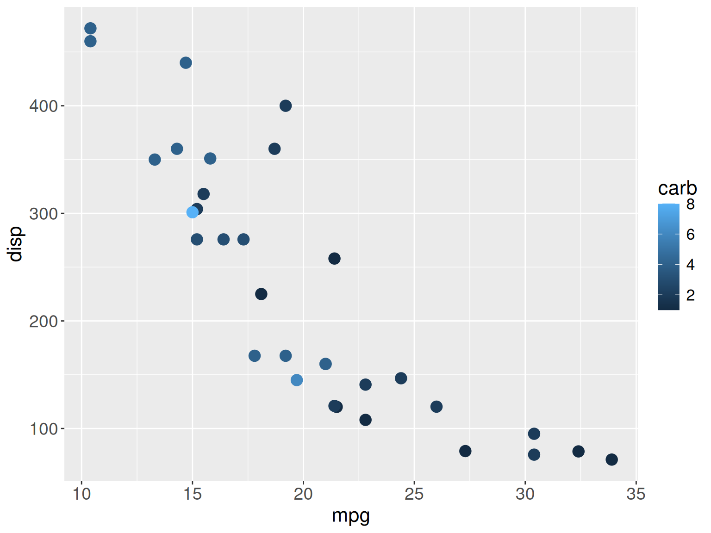
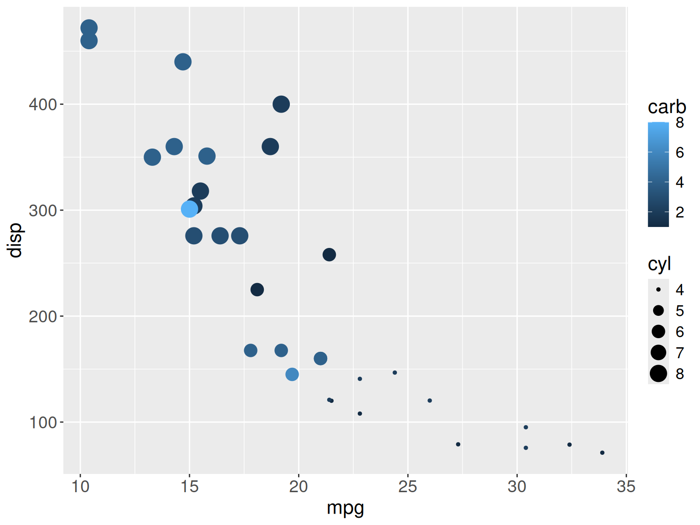
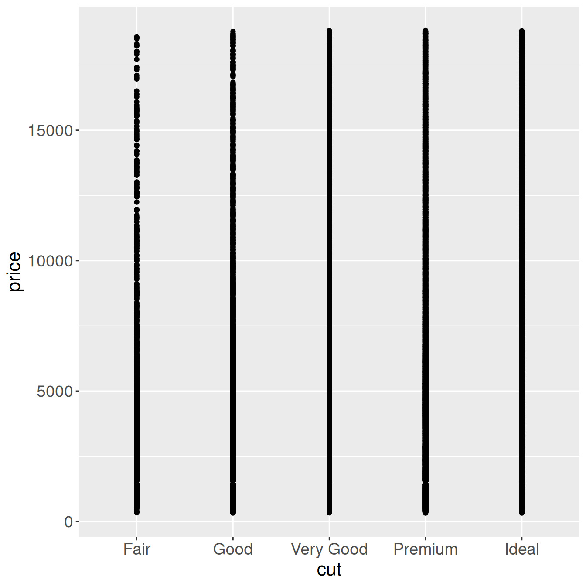

Introduction to ggplot2
Two “types” of visualizing data

Exploration
iterate fast
check and recheck
Explanation
deliberate, purposeful
specific, perfect

What is a plot?
The grammar of graphics
How to use ggplot2?
syntax + examples
Creating a ggplot
Exercise
Datasets
Several datasets are readily available in R (either directly or via packages).
ggplot2 also provides datasets.
Using the ggplot2 cheatsheet and the mtcars dataset, create the following plot:

You can create very different plots with small changes in the code
You can use multiple geoms at the same time
Each geom has its own features
Exercise
Try to reproduce this figure (mtcars data)

Exercise
Try to reproduce this figure (mtcars data)

Exercise
Try to reproduce this figure (mtcars data)

Mapping vs Setting
Caution
ggplot magic

Exercises
Using the diamonds dataset plot price as a function of cut. Try out different geoms; which version do you prefer?

Try
- boxplot
- violin plot
- col?
- smooth?
- dot plot
Coordinates
Titles, axis, etc.
Themes
Exercises
Reproduce the following image (diamonds dataset)
Reproduce the following image (diamonds dataset)
Reproduce the following image (diamonds dataset)
Reproduce the following image (diamonds dataset)
Reproduce the following image (diamonds dataset)
Example dataset